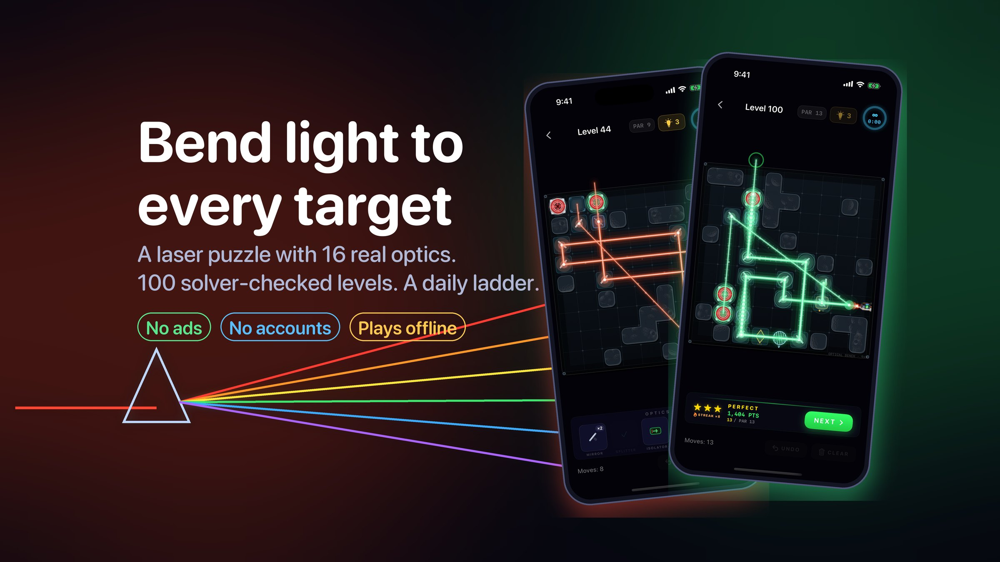
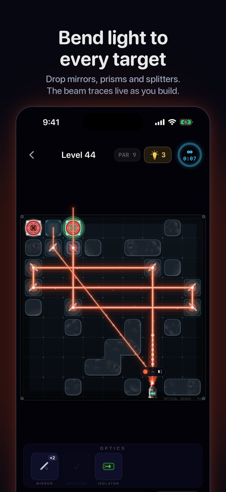
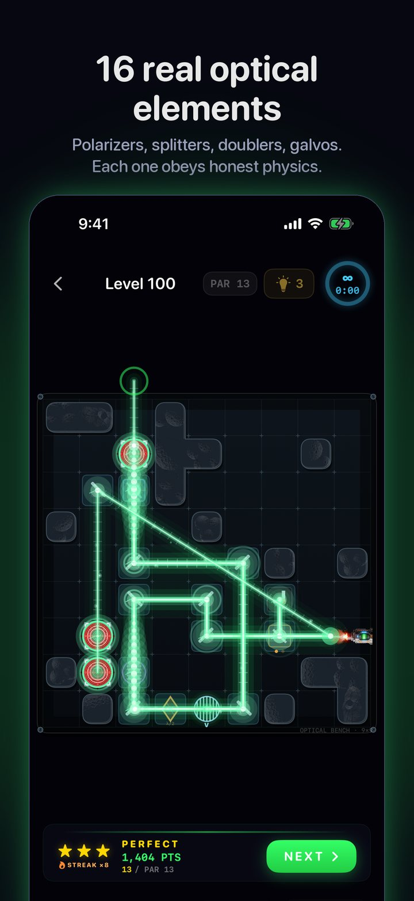
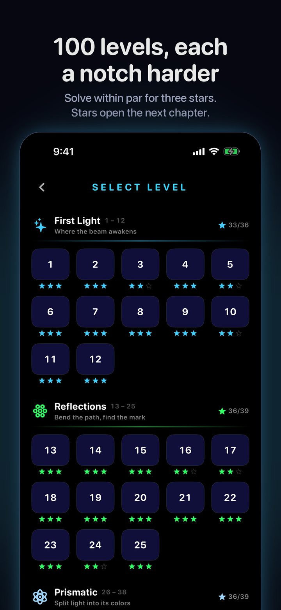
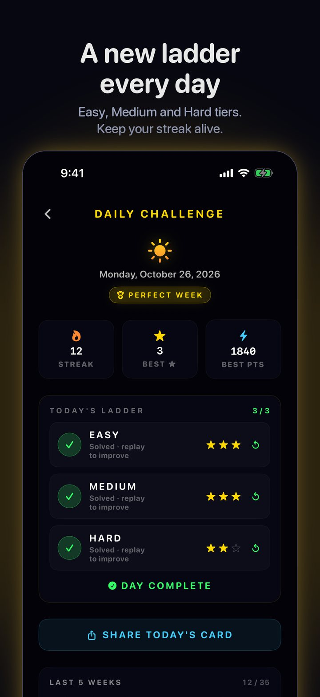
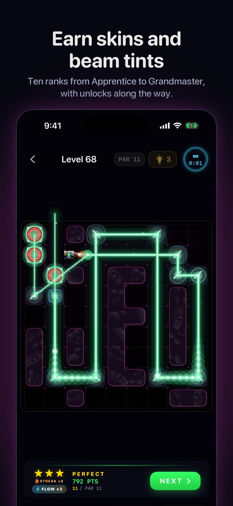
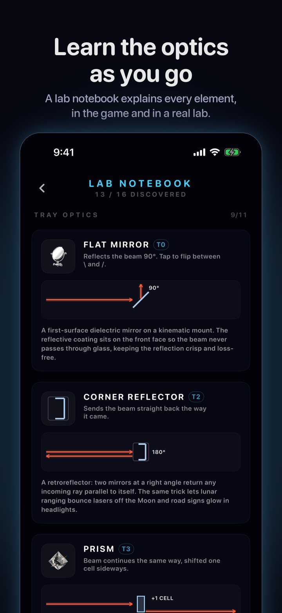

Real optics.
Real puzzles.
A laser-optics puzzle for iPhone and iPad. Place mirrors, prisms and splitters, watch the beam trace live, and feel the click when the whole board lights up.

The optics
Real optics, honest physics
Sixteen optical elements, each with its own rules of colour, intensity and polarization. Mixing them is where the puzzles live.
16 optical elements
Mirrors, corner reflectors, prisms, splitters, polarizers, wave plates, frequency doublers, isolators and galvo mirrors that flip on every hit.
100 levels, each a notch harder
Every level is checked by a solver before it ships: one intended solution, no shortcuts, never easier than the one before.
Stars that mean something
Solve within par with no hints for three stars. Stars open the next chapter, so a perfect run matters.
A new ladder every day
Easy, Medium and Hard tiers, the same puzzles for everyone. Clear all three to keep your streak and share a result card.
Ranks and unlocks
Ten ranks from Apprentice to Grandmaster. Earn board skins and beam tints as you climb, then keep going past level 100.
A lab notebook
Every optic you meet gets a page: how it bends the beam in the game, and what the real thing does on an optical bench.
In the app
A board that reads at a glance
Rock-mass walls, a beam with real bloom and light-travel reveal, four board skins, four beam tints.






How it plays
Thirty seconds to learn
Chapters to master.
Drag an optic onto a slot
The tray holds exactly the pieces the level needs. Typed slots only take their own kind.
Tap to aim
Mirrors flip, splitters and polarizers rotate. The beam redraws live with every move.
Light every target
Hit par with no hints for three stars. Stuck? A hint bank refills one every ten minutes.
Accessibility
Made to be played by everyone
Colour-blind palettes with letter cues on beams and targets, VoiceOver labels, Reduce Motion, adjustable haptics and full Dynamic Type. Zen mode has no timer. Arcade keeps the countdown.